Etapa 2
Nomeclaturas do Grid
grid container
Elemento-pai que terá a propriedade
display: grid especificada. Ele irá
"envolver" todos os itens do grid.
grid container
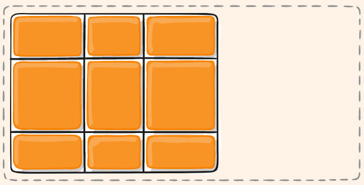
grid item
Elementos filhos diretos dop
grid container.
grid container
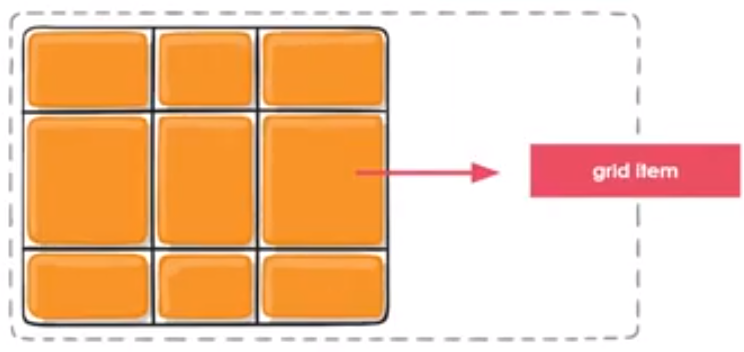
grid columns
As faixas verticais dos itens do grid, são chamadas de colunas (grid columns).
grid columns

grid rows
As faixas horizontais dos itens do grid, são chamadas de linhas (grid rows).
grid rows

grid gaps
Espaços entre as linhas (grid rows) e
colunas (grid columns) do grid.
grid gaps

grid line
Divisórias que compõem a estrutura da grade. As linhas entre as colunas
são chamadas de column lines (linhas de coluna) e, as que estão entre as faixas horizontais, são chamadas de
row lines (linhas de linha).
grid line

grid cell
São as células, ou seja, cada "quadrado" da grade, que vai entre uma
grid line e outra.
grid cell
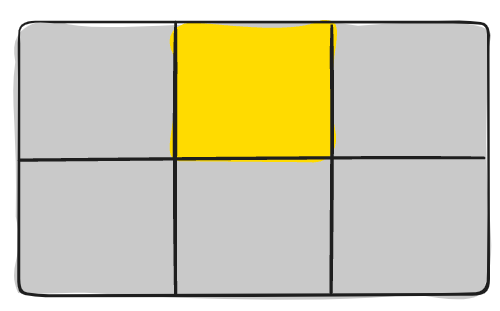
display: grid;
Tem comportamento de elementos em bloco.
display: inline-grid;
Aloca os elementos um ao lado do outro (em linha).
Etapa 4
Adicionando colunas e linhas ao grid
Linhas e colunas no grid
grid-template-columns
Define as colunas (columns) do grid
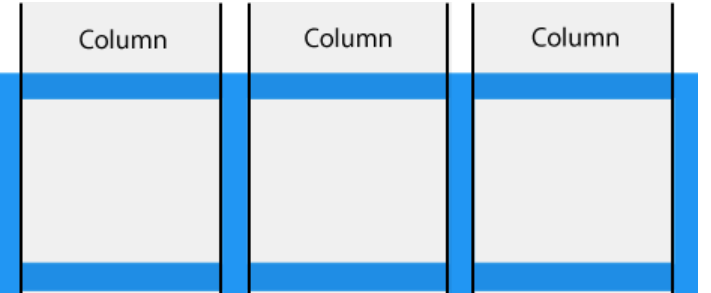
grid-template-rows
Define as linhas (rows) do grid
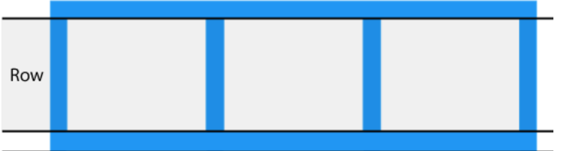
Item 01
Item 02
Item 03
Item 04
Item 05
Item 06
Unidade de medida fr
Criada para o CSS Grid, a unidade de medida
fr representa uma
fração do espaço disponível no container do grid.
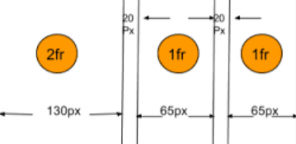
Função repeat
Permite repetir para todas, ou para algumas das faixas, o mesmo valor
para seu tamanho de coluna ou linha.
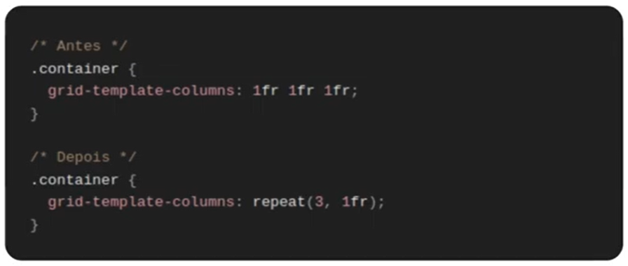
Função repeat: outros valores
auto-fill
grid-template-columns: repeat(auto-fill, minmax(100px, 1fr));
auto-fit
grid-template-columns: repeat(auto-fit, minmax(100px, 1fr));
Item 01
02
03
04
05
06 Raphael
Etapa 5
Grid Implícito e Explícito
Item 01
Item 02
Item 03
Item 04
Item 05
Item 06
Item 07 - Item 07 - Item 07 - Item 07 - Item 07 - Item 07 - Item 07 -
Item 07 - Item 07 - Item 07 - Item 07 - Item 07
Unidade de medida fr
Quando define-se as colunas e linhas através das propriedades
grid-template-columns
e
grid-template-rows, estamos criando um grid explícito.
Mas, se os itens não couberem, o grid colocará um item fora desse grid
que definimos, criando o que chamamos de grid implícito.
Propriedade grid-auto-flow
Controla como o algoritmo de reposicionamento automático irá se
comportar.
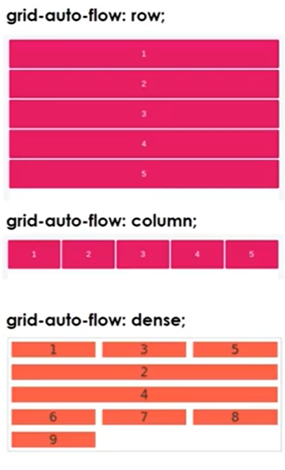
Item 01
Item 02
Item 03
Item 04
Item 05
Item 06
Item 07
Etapa 6
Define o Tamanho Mínimo e Máximo das Faixas
Item 01
Item 02
Item 03
Item 04
Item 05 - Item 05 - Item 05 - Item 05 - Item 05 - Item 05 - Item 05 -
Item 05 - Item 05 - Item 05 - Item 05 - Item 05 - Item 05 - Item 05 -
Item 05 - Item 05 - Item 05 - Item 05 - Item 05 - Item 05 - Item 05 -
Item 05 - Item 05 - Item 05 - Item 05 - Item 05 - Item 05 - Item 05 -
Item 05 - Item 05 - Item 05 - Item 05 - Item 05 - Item 05 - Item 05 -
Item 05 - Item 05 - Item 05 - Item 05 - Item 05 - Item 05 - Item 05 -
Item 05 - Item 05 - Item 05 - Item 05 - Item 05 - Item 05 - Item 05 -
Item 05 - Item 05 - Item 05 - Item 05 - Item 05
Item 06
Item 07
Item 01
Item 02
Item 03
Item 04
Item 05
Item 06
Item 07
Item 01
Item 02
Item 03
Item 04
Item 05 - Item 05 - Item 05 - Item 05 - Item 05 - Item 05 - Item 05 -
Item 05 - Item 05 - Item 05 - Item 05 - Item 05 - Item 05 - Item 05 -
Item 05 - Item 05 - Item 05 - Item 05 - Item 05 - Item 05 - Item 05 -
Item 05 - Item 05 - Item 05 - Item 05 - Item 05 - Item 05 - Item 05 -
Item 05 - Item 05 - Item 05 - Item 05 - Item 05 - Item 05 - Item 05 -
Item 05 - Item 05 - Item 05 - Item 05 - Item 05 - Item 05 - Item 05 -
Item 05 - Item 05 - Item 05 - Item 05 - Item 05 - Item 05 - Item 05 -
Item 05 - Item 05 - Item 05 - Item 05 - Item 05
Item 06
Item 07
Etapa 7
Alocando os itens do Grid nas posições específicas
Grid Lines
Divisórias que compõem a estrutura da grade. As linhas entre as colunas
são chamadas de column lines 0(linhas de coluna) e, as que estão
entre as faixas horizontais, são chamadas de row lines
(linhas de linha).
Cada linha possui um número para que possamos usar de referência (exceto
para grids implícitos).
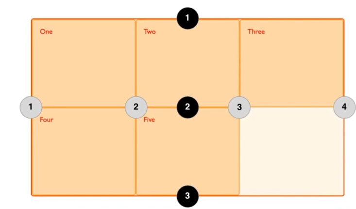
Posicionando os itens do grid

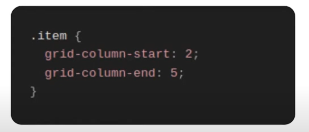
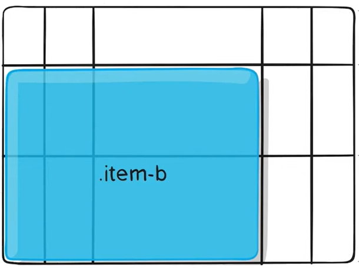
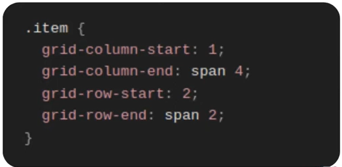
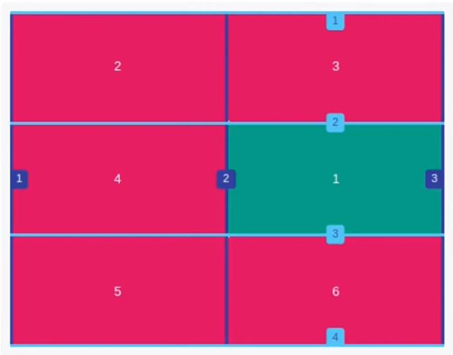

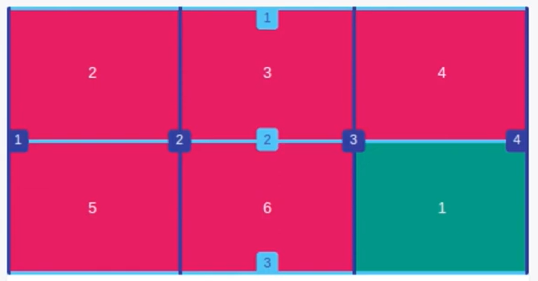

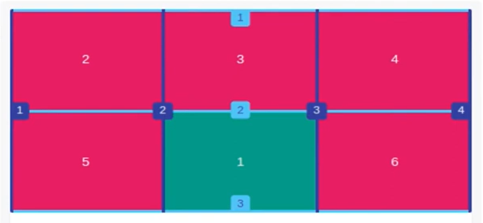
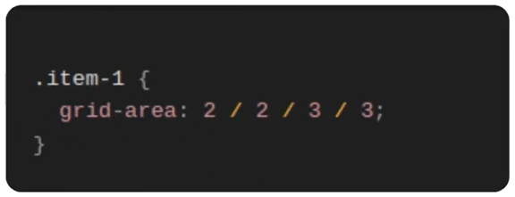
Shorthand de outras propriedades
Através da propriedade grid-area, nós
conseguimos definir os valores das propriedades grid-row-start,
grid-row-end, grid-column-start e
grid-column-end de uma só vez.
/* Antes /*
.item {
grid-column-start: segunda-linha-col;
grid-column-end: span 4;
grid-row-start: linha-dois;
grid-row-end: span 2;
}
/* Depois /*
.item {
grid-area: linha-dois / segunda-linha-col / span 2 / span 4;
}
grid-area: <grid-row-start> / <grid-column-start> /
<grid-row-end> / <grid-column-end>
Nomeando as áreas
É possível nomear as áreas do grid e posicionar os itens dentro das
áreas específicas, as referenciando através do nome.
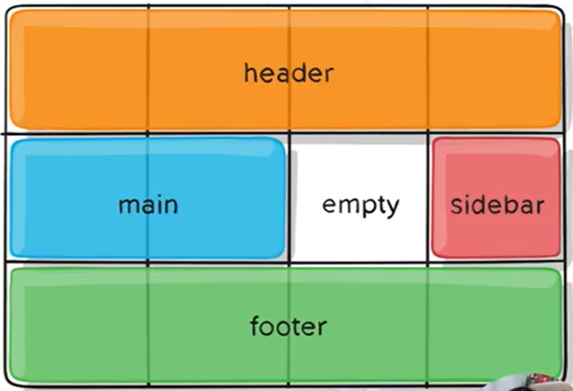
Etapa 10
Definindo os Espaçamentos dos Elementos do Grid
Espaçamento entre as faixas do grid
Temanho das linhas do grid (grid lines) através das propriedades
column-gap e
row-gap (ou através da shorthand
gap)
Os espaçamentos são adicionados apenas entre uma linha/coluna e
outra (somente no "meio", não as extremidades, para isso usasse o
"padding").
Etapa 11
Shorthand "grid"
/* Antes */
.container {
grid-template-rows: 100px 300px;
}
/* Depois */
.container {
grid: 100px 300px / 3fr 1fr;
}
/* Antes */
.container {
grid-auto-flow: row;
grid-template-columns: 200px 1fr;
}
/* Depois */
.container {
grid: auto-flow / 200px 1fr;
}
/* Antes */
.container {
grid-auto-flow: row dense;
grid-auto-rows: 100px;
grid-template-columns: 1fr 2fr;
}
/* Depois */
.container {
grid: auto-flow dense 100px / 1fr 2fr;
}
/* Antes */
.container {
grid-template-rows: 100px 300px;
grid-auto-flow: column;
grid-auto-columns: 200px;
}
/* Depois */
.container {
grid: 100px 300px / auto-flow 200px;
}
/* Antes */
.container {
grid-template-areas:
"header header header"
"footer footer footer";
grid-template-rows: 1fr 25px;
grid-template-columns: auto 50px auto;
}
/* Depois */
.container {
grid: "header header header" 1fr
"footer footer footer" 25px
/ auto 50px auto;
}
/* Gera uma linha com 100px de altura e 2 colunas com 1fr */
grid: 100px / 1fr 1fr
/* Gera uma linha com 100px de altura. O grid-auto-flow é deifinido como column
(pois está logo antes da definição das colunas). Ele também define o grid-auto-columns
com 100px 50px */
grid: 100px / auto-flow 100px 50px
Etapa 11
Alinhando os itens com justify-items e align-items
Valores de justify-items
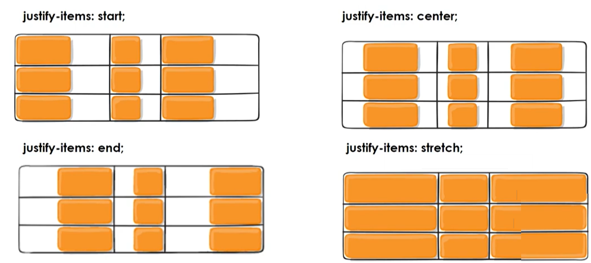
Valores de align-items
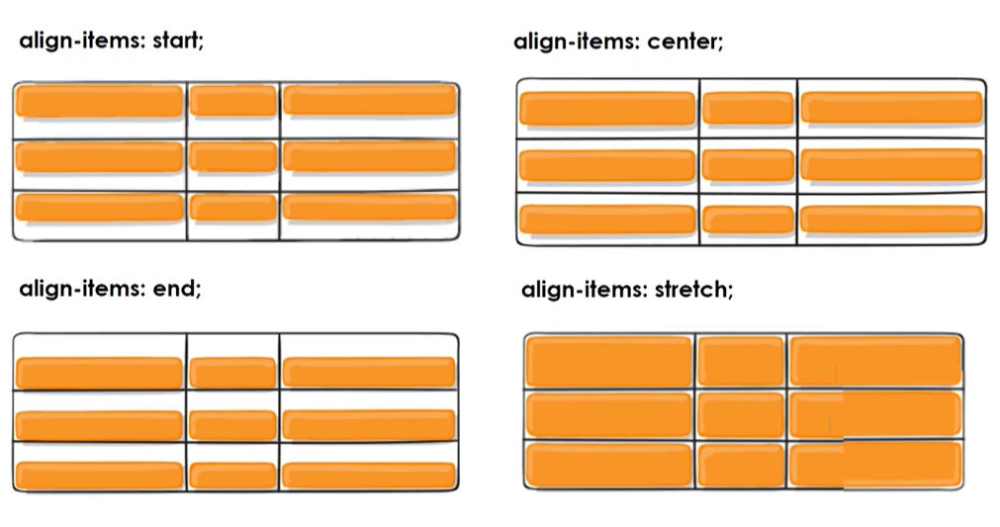
Etapa 13
Alinhando os itens da linha e coluna com place-items
Etapa 14
Alinhando o conteúdo do grid com justify-content e align-content
Container do grid
Container é o elemento que envolve a grade na qual estamos criando e
muitas vezes, ele acaba sendo maior do que o grid.
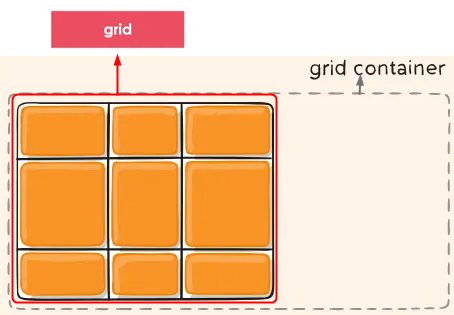
Etapa 16
Alinhando itens específicos co justify-self e align-self
Valores de justify-self
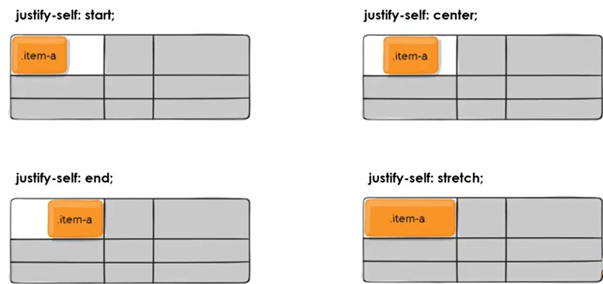
Valores de align-self
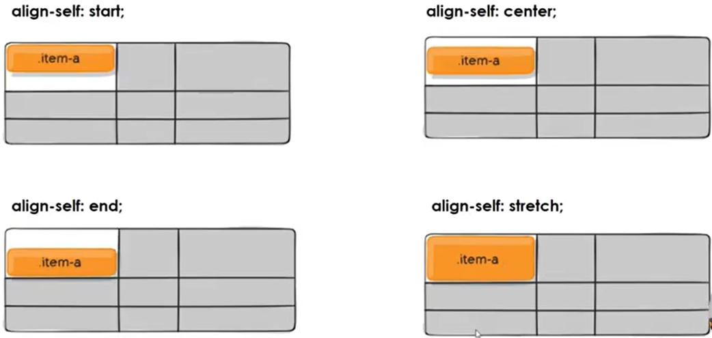
MATERIAIS DE APOIO